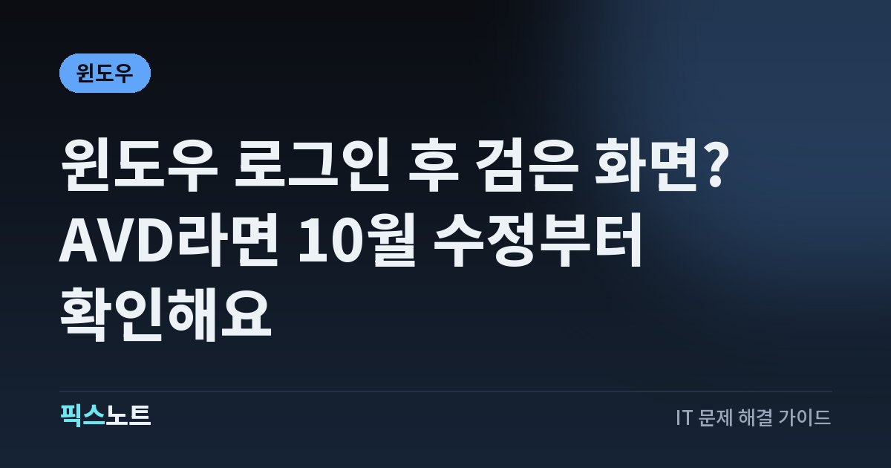

윈도우 로그인 후 검은 화면? AVD라면 10월 수정부터 확인해요
Windows 11 26H2의 AVD·FSLogix 환경에서 로그인 뒤 바탕 화면이 안 뜰 때 수정 업데이트와 임시 복구 순서를 확인해요.

암호를 넣고 로그인했는데 검은 화면에 커서만 보이면 파일이 사라진 건 아닌지 걱정돼요. Microsoft는 Windows 11 26H2의 일부 가상 데스크톱에서 바탕 화면이 로드되지 않는 문제를 확인하고 10월 13일 업데이트로 수정했어요. 내 환경이 해당되는지 가린 뒤 화면 복구와 업데이트를 차례로 진행해요.
먼저 회사 가상 데스크톱에서 생긴 문제인지 봐요
Windows 로그인 화면까지는 정상인데 로그인한 뒤 바탕 화면과 작업 표시줄이 나오지 않으면, 전원이 아예 안 켜지는 증상과 나눠서 봐야 해요. Microsoft가 이번에 확인한 문제는 Windows 11 26H2 설치 뒤 일부 기기에서 바탕 화면을 불러오지 못하는 현상이에요. 주로 FSLogix를 쓰는 Azure Virtual Desktop, 줄여서 AVD 호스트에서 관찰됐고 일부 기존 사용자 프로필에서 더 자주 나타났어요. 회사 원격 업무 화면에 접속한 직후인지, 집 노트북 자체에 로그인한 직후인지 먼저 기록해요. 개인 PC에서도 검은 화면은 생길 수 있지만 화면 색만 같다고 이번 버그라고 단정하지는 마세요. 회사 환경이면 담당자에게 AVD와 FSLogix 사용 여부를 물어보는 것이 첫 확인이에요.
10월 13일 수정과 내 설치 상태를 맞춰봐요
이번 문제는 2026년 10월 13일 배포된 KB5127648과 이후 Windows 업데이트에서 수정됐어요. 이 업데이트 문서는 Windows 11 26H2·25H2·24H2를 함께 다루며 OS 빌드를 각각 26300.9711, 26200.9711, 26100.9711로 적고 있어요. 세 숫자를 모두 같은 버전의 빌드라고 읽으면 안 돼요. 내 컴퓨터의 버전과 설치 이력을 함께 확인하고, 회사 가상 데스크톱이라면 서버 쪽 호스트의 적용 여부를 담당자가 확인해야 해요. 접속에 쓰는 개인 노트북만 업데이트했다고 원격 호스트까지 수정되는 것은 아니에요. 이후 누적 업데이트가 이미 적용됐다면 예전 KB 번호를 별도로 설치하려고 하지 말고, 현재 버전에서 수정이 포함됐는지 먼저 확인해요.
작업 관리자가 열리면 바탕 화면부터 복구해요
검은 화면에 커서가 보이고 키보드 입력이 먹는다면 Microsoft의 일반 검은 화면 안내에 있는 탐색기 재시작을 시도해요. 원격 화면에서는 단축키가 어느 컴퓨터로 전달되는지도 확인해야 해요. 내 노트북의 작업 관리자를 열어 놓고 원격 세션을 고치고 있다고 생각하지 않도록 화면을 구분해요.
- 문제가 난 화면에서 Ctrl + Shift + Esc를 눌러 작업 관리자가 열리는지 확인해요.
- 목록에 Windows Explorer가 있으면 해당 항목을 다시 시작해요.
- 항목이 없다면 새 작업 실행 기능에서 explorer.exe를 입력하고 Enter를 눌러요.
바탕 화면이 돌아오면 작업 중이던 내용을 먼저 저장해요. 이 절차는 화면을 되살리는 임시 조치라서 업데이트 적용 여부는 별도로 확인해야 해요.
개인 PC라면 화면 출력과 그래픽 반응도 확인해요
AVD를 사용하지 않는 개인 PC라면 같은 이름의 버그를 찾기 전에 화면 연결과 그래픽 반응을 점검해요. Microsoft는 검은 화면 원인이 여러 가지라고 설명해요. 모니터 신호가 없는 상태와 바탕 화면만 뜨지 않는 상태를 구분하면 다음 확인이 쉬워져요.
- 외부 모니터의 전원과 연결 케이블을 확인하고, 노트북은 외부 화면을 분리한 상태도 비교해요.
- Windows + Ctrl + Shift + B를 눌러 그래픽 드라이버를 재설정해요. 성공하면 소리나 화면 깜박임이 나타날 수 있어요.
- Ctrl + Alt + Del 화면이 나타나면 작업 관리자를 열어 탐색기를 다시 시작해요.
이 순서로 화면이 돌아왔더라도 원인이 확정된 것은 아니에요. 어느 단계에서 반응했는지 적어두고, 재발할 때 같은 조건인지 비교해요.
화면이 돌아온 뒤 업데이트하고 다시 로그인해요
화면이 복구되면 먼저 문서와 작업을 저장하고 Windows Update에서 제공되는 최신 업데이트를 확인해요. Microsoft는 이번 문제를 포함한 수정이 들어 있으므로 최신 업데이트 설치를 권장해요. 회사 관리 기기는 업데이트 배포 시점이 정해져 있을 수 있으니 담당자에게 설치 상태와 재시작 일정을 확인해요. AVD라면 호스트에 수정이 반영됐는지, 다시 접속한 세션에서 바탕 화면이 정상으로 나오는지도 살펴야 해요. 설치 버튼을 눌렀다는 사실과 설치·재시작까지 끝났다는 사실은 구분해서 기록해요. 수정 업데이트가 적용된 환경에서는 이 알려진 문제를 위한 예전 임시 조치를 새로 적용할 필요가 없다는 것이 공식 안내예요. 정상 접속을 확인한 날짜도 함께 남겨두세요.
프로필 삭제나 업데이트 제거부터 하지는 마세요
기존 프로필에서 더 자주 보고됐다는 설명을 보고 사용자 폴더나 FSLogix 프로필을 바로 삭제하지는 마세요. 그런 삭제는 이 글에서 안내하는 복구 단계가 아니에요. 필요한 문서와 앱 설정을 먼저 보전하고 담당자가 오류를 확인할 수 있도록 현상을 남기는 편이 좋아요. 특히 원격 업무 환경에서 임의로 프로필이나 시스템 설정을 바꾸면 원래 문제와 새 변경의 영향을 구분하기 어려워져요. 업데이트 직후 발생했다고 최신 보안 업데이트를 일단 제거하는 방식도 이번 문제의 첫 대응으로 삼지 마세요. 공식 수정이 나온 상태이므로 먼저 적용 여부를 확인해야 해요.
수정 뒤에도 반복되면 오류 기록을 모아요
KB5127648 또는 이후 업데이트를 설치했는데도 반복되면 모든 검은 화면을 이번 문제 하나로 설명할 수는 없어요. 처음 시작한 시점, 로그인 전후 중 어느 단계인지, 커서와 보안 화면이 보이는지, 탐색기를 실행하면 돌아오는지를 기록해요. 회사 담당자는 Microsoft가 제시한 증상 중 응용 프로그램 이벤트 로그의 Windows Explorer 충돌 여부도 살펴볼 수 있어요. 로그에 비슷한 오류가 있다고 그것만으로 원인이 확정되지는 않으니 설치된 OS 버전과 함께 판단해야 해요. 같은 호스트의 다른 사용자에게도 생기는지, 특정 사용자에게만 생기는지 비교한 결과도 도움이 돼요. 로그를 공유할 때는 암호나 인증 코드를 넣지 말고 회사에서 정한 문의 경로로 전달해요.
지원 문의에는 로컬과 원격 환경을 나눠 적어요
문의 내용을 쓸 때 접속용 PC와 문제가 난 원격 호스트의 정보를 나눠 적으면 서로 다른 컴퓨터를 점검하는 일을 줄일 수 있어요. 개인 PC라면 모델명과 Windows 버전, 최근 업데이트 날짜, 모니터 연결 상태를 알려주세요. 회사 가상 데스크톱이라면 AVD·FSLogix 사용 여부, 담당자가 확인한 호스트 빌드, 문제가 난 사용자와 시간, 재접속 후 결과를 덧붙여요. explorer.exe 실행으로 일시 복구됐는지도 적어두세요. 화면을 복구한 뒤에는 중요한 자료가 정상으로 열리는지 확인하고 별도 백업을 마련해요. 바탕 화면이 계속 안 뜨면 반복해서 전원을 끄기보다 담당자나 Microsoft 지원 안내에 따라 다음 진단을 진행해요. 이 글의 수정 대상과 다른 증상일 가능성도 열어두고 확인해요.
자주 묻는 질문
윈도우 검은 화면이면 전부 KB5127648로 해결되나요?
그렇지는 않아요. 이번 알려진 문제는 주로 AVD·FSLogix 환경에서 관찰된 로그인 후 바탕 화면 로드 문제예요. 개인 PC의 화면 연결이나 그래픽 드라이버 문제까지 같은 수정으로 해결된다고 보장하지는 않아요.
explorer.exe를 실행했더니 화면이 나오면 끝인가요?
바탕 화면을 다시 사용할 수 있게 된 상태예요. 작업을 저장한 뒤 수정 업데이트 적용 여부를 따로 확인하고, 재로그인한 뒤에도 정상인지 봐야 해요. 일시 복구만으로 근본 원인이 확정되지는 않아요.
회사 원격 화면만 검게 나오는데 내 노트북을 업데이트하면 되나요?
접속용 노트북과 원격 호스트는 구분해야 해요. AVD 호스트 쪽에서 발생한 문제라면 담당자가 해당 호스트의 업데이트와 프로필 상태를 확인해야 하므로, 로컬 업데이트만으로 조치가 끝났다고 보기는 어려워요.